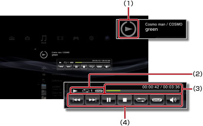

Musik > Brug af det lille kontrolpanel
Brug af det lille kontrolpanel
Brug det lille kontrolpanel til at udføre forskellige funktioner, mens du afspiller musik.
1. |
Tryk på PS-tasten, mens du afspiller musik. |
||||||||
|---|---|---|---|---|---|---|---|---|---|
2. |
Brug retningsknapperne til at vælge et ikon til det musikindhold, der afspilles under 
|
Tips
- Ikonet for den afspillede musik vises under ikonet
 (Musik).
(Musik). - Det lille kontrolpanel kan skjules ved at trykke på
 -tasten, mens der afspilles musik.
-tasten, mens der afspilles musik.
Forrige

Gå tilbage til begyndelsen af det nuværende eller forrige nummer.
Næste
Gå til begyndelsen af det næste nummer.
Pause
Stands afspilning midlertidigt.
Stop
Stop afspilningen, og skjul det lille kontrolpanel.
Bland
Afspil numrene i vilkårlig rækkefølge.
Gentag
Gentag afspilning af numre. Du kan vælge mellem tre forskellige gentagelsestilstande (se nedenfor) ved at trykke på  -tasten.
-tasten.
 |
Gentag afspilning af et nummer. |
|---|---|
|
Gentag afspilning af alle numre. |
| Ingen visning | Nulstil gentag afspilning, og afspil alle numre i rækkefølge. |
Justering af lydstyrke
Juster lydstyrken for de afspillede numre under (Musik). Du kan vælge ét af ni niveauer.
Tip
Hvis lydstyrken er for høj, kan lyden blive forvrænget. Hvis dette sker, skal der skrues ned for lyden.